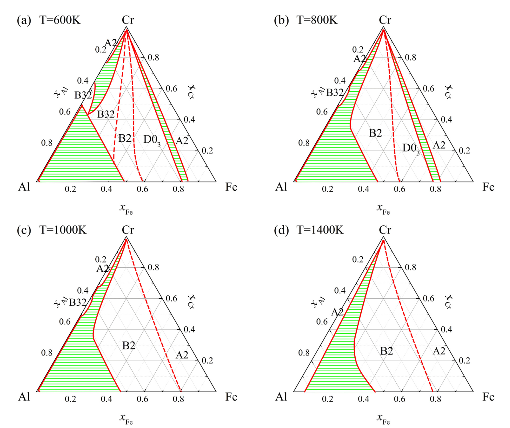
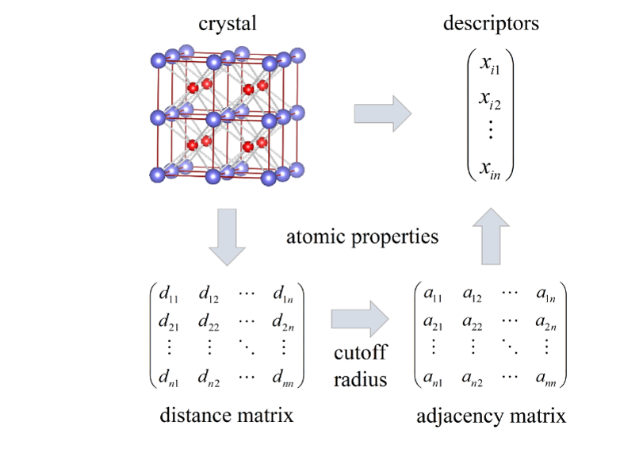
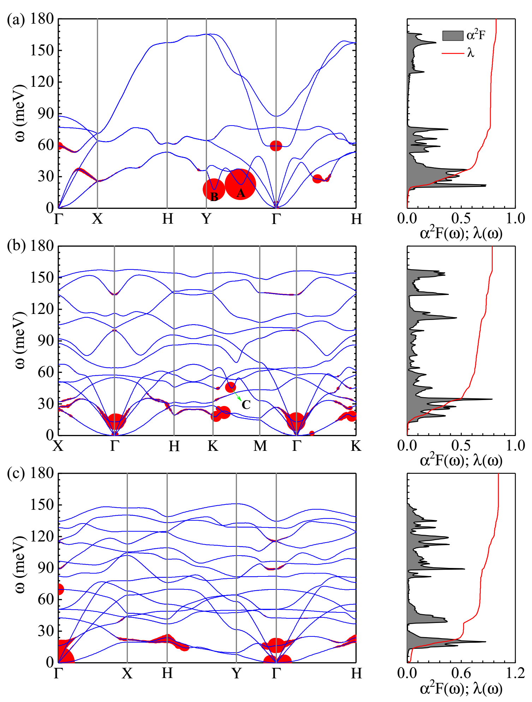

Phase diagrams and elastic properties of the Fe-Cr-Al alloys: A first-principles based study

The phase diagrams and elastic properties of the Fe-Cr-Al alloys in full-temperature and all-compositional ranges
are calculated. By combining first-principles calculations and cluster variation method, binary and ternary phase
diagrams are obtained. A new ternary ordered phase B32 which is different from ternary extension of binary
phases appears in the ternary section around temperature of 600 K. The binary FeAl phases show an extremely
high solubility for Cr, while the binary CrAl phase solid solution has a low solubility for Fe.
Machine Learning-Aided Design of Materials with Target Elastic Properties

We have presented a set of universal descriptors which combines atomic properties
with crystal fingerprint to build interpretable models for elastic property prediction. This approach
is demonstrated powerful to the prediction of elastic moduli with minor deviations with respect
to density functional theory (DFT) based calculations. Besides, Zeng has developed an effective method
to evaluate the influence of each descriptor, and find bond strength related properties are most
important, which indicates that the ML model captures the underlying physics of the bulk and
shear moduli.
Multigap anisotropic superconductivity in borophenes

We use ab initio anisotropic Migdal-Eliashberg formalism to examine the pairing mechanism and the nature of the superconducting gaps in experimentally fabricated borophenes. Our results indicate that the superconducting transition is dominated by a standard phonon-mediated mechanism, and multiple anisotropic superconducting gaps with critical temperatures Tc
even approaching 33 K are present in the freestanding form of the fabricated borophenes. These findings provide a different perspective for superconductivity in borophenes.
Jun Ni's Laboratory is committed to the research of electronic, magnetic and
superconducting propeties of low-dimentional materials by density-functional
calculations. Besides, we are trying to find opportunities for further breakthroughs
in machine learning to provide even greater advances in the automated design and
discovery of materials. Welcome to join us or feel free to contact us.
(Email:
junni@mail.tsinghua.edu.cn Tel: 010-62772781)